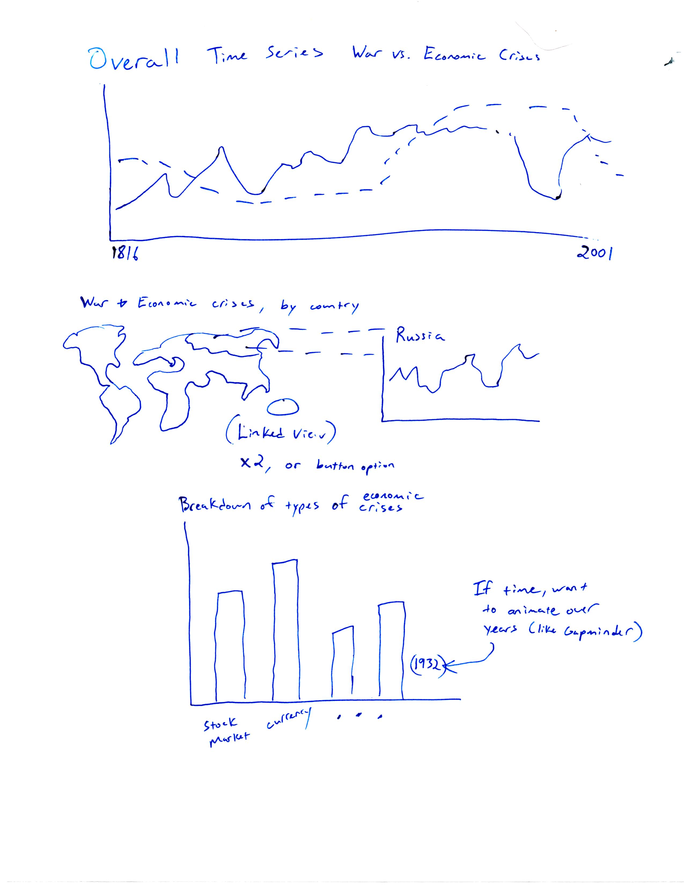

Project Sketch
Planned Tools
Luckily a lot of the primary data cleaning has already been finished in this dataset, due to my prior work with it a few years back. Some of the data visualizations I am planning on implementing however, will largely rely on a lot of aggregation of counts or other data along an axis of by country or by year. Techniques to do this type of aggregation are easily available in R or Python, and I am fairly confident in both, so it will largely be a "game-time" decision as to which language I use for this purpose.
Planned Techniques
- Time Series Line Chart: The primary visualization that I plan on leading my project page with would be a time series line chart. This would be an aggregate total across the entire dataset, plotting both number of economic crises and number of militarized disputes for all countries by year. The hope would be to show an aggregate trend of world politics, whether economy and military issues track together or opposite one another or not at all correlated.
- Country Breakdown of Economic/Military Crises: The base of this visualization would be a world map, with the ~70 countries in the dataset identified and geocoded. Each would be colored by the value of their average number of economic crises or militarized disputes per year. The (ambitious) plan at this point is to make this into a linked view chart that would break out a time series chart of the trends in crises within the country over time as the user hovers over a country.
- Bar Chart of Economic Crises: One advantage of the economic crisis dataset I'm using is that it separates economic crises into 6 distinct types/categories, and the goal here would be to chart their totals in the full data. This could show if there have been a disproportionate number of each unique type of crisis, overall. Depending on time available, I may try to implement this as a type of animation, like GapMinder did with their country bubbles over time, of having each year in the dataset showing a different frame on this chart.
Planned Interactivity
As mentioned within the techniques, I plan a number of interactions, but some may be modified or downgraded depending on implementability. First, I plan to have the primary line chart have a basic interaction along the lines of a tooltip and/or brush/context/panning display. Second, I plan some interaction in the form of a linked-view on hover between a world map and a breakout chart. One thing I am not sure about is that I would want this map for both economic crises and militarized disputes separately, ideally this would be done through a button or interface allowing the user to switch back and forth, but I have honestly not had much success with buttons on prior assignments -- so, worst case, I would just make this two separate visuals. Finally, on the bar chart, I plan on potentially implementing an animation form of the data, or failing that, at the very least having some basic interactivity like a tool tip.
Planned Interface
